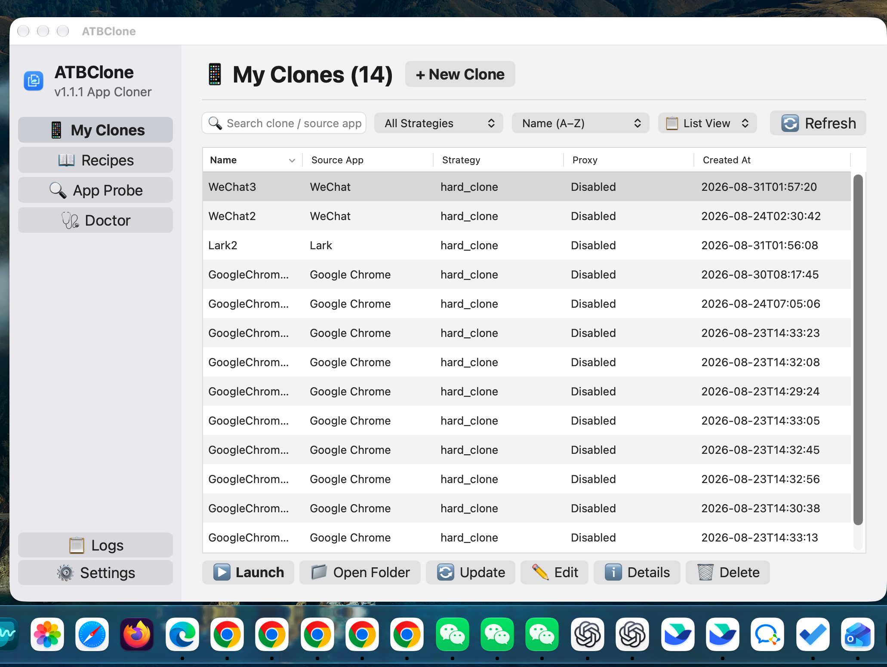

Kapitel 1: Grundlegende Bedienung & Klon-Verwaltung¶

In diesem Kapitel erfahren Sie, wie Sie mithilfe des 7-Schritte-Assistenten Ihre erste Klon-Anwendung erstellen und im Alltag verwalten (Starten, Datenordner öffnen, Updates synchronisieren und sicher löschen).
📑 Inhaltsverzeichnis¶
- Klon-Anwendung erstellen (7-Schritte-Assistent)
- Schritt 1: Zielanwendung auswählen
- Schritt 2: Rezept und Strategie prüfen
- Schritt 3: Identität und Sprache festlegen
- Schritt 4: Installationspfad bestätigen
- Schritt 5: Datenverzeichnis festlegen
- Schritt 6: Netzwerk-Proxy einrichten (Optional)
- Schritt 7: Bestätigen und Klonen
- Klon-Anwendungen verwalten
- Klon-App starten
- Datenordner mit einem Klick öffnen
- Klon-Konfiguration bearbeiten
- Verlustfreie Synchronisation nach App-Updates
- Batch-Operationen in der Tabellenansicht
- Sicheres Löschen (Daten behalten vs. vollständig entfernen)
🪄 Klon-Anwendung erstellen (7-Schritte-Assistent)¶
Klicken Sie im Dashboard auf "+ Neuer Klon", um den Assistenten zu öffnen.
+-------------------------------------------------------------+
| 🧙 Neuer Klon - Schritt 1 von 7 |
| |
| Zielanwendung (.app) auswählen |
| [/Applications/WeChat.app ] [ Durchsuchen]|
| |
| [ Abbrechen ] [ Weiter > ] |
+-------------------------------------------------------------+
Schritt 1: Zielanwendung auswählen¶
- Klicken Sie auf "Durchsuchen..." (öffnet standardmäßig
/Applications). - Wählen Sie das App-Bundle (z. B.
WeChat.app,Telegram.app,Cursor.app). - Klicken Sie auf "Weiter >".
Tip
Sie können auch den absoluten Pfad einer beliebigen App auf externen Laufwerken manuell eingeben.
Schritt 2: Rezept und Strategie prüfen¶
ATBClone analysiert die ausgewählte Anwendung automatisch:
- Integriertes Rezept: Bei über 33 bekannten Apps wird automatisch die beste Strategie gewählt (
Hard Clonefür Messenger,Soft Clonefür Browser/Editoren). - Smart Prober: Bei unbekannten Apps scannt der Scanner Mach-O-Binärdateien und Sandbox-Entitlements dynamisch.
- Strategie-Auswahl:
hard_clone: Vollständige Bundle-Kopie mit modifizierter ID und Wrapper-Injektion.soft_clone: Schlanker Launcher, der isolierte Parameter übergibt.
Schritt 3: Identität und Sprache festlegen¶
- Klon-Name: Vergeben Sie einen aussagekräftigen Namen (z. B.
WeChat-Arbeit,Telegram-Zweitkonto). - Bundle Identifier: Wird automatisch generiert (z. B.
com.tencent.xinWeChat.atbclone.work). - App-Icon: Ziehen Sie optional ein beliebiges
.pngoder.icnsauf das Icon-Feld, um es anzupassen. - Sprache überschreiben: Legen Sie fest, in welcher Oberflächensprache der Klon starten soll.
Schritt 4: Installationspfad bestätigen¶
Speicherort des Klon-Bundles (Standard: ~/ATBClone/Apps/<KlonName>.app).
Schritt 5: Datenverzeichnis festlegen¶
Speicherort für Chats, Caches und Datenbanken (Standard: ~/ATBClone/Data/<KlonName>).
* Architektur-Vorteil: Die vollständige Trennung von Programmcode (Apps/) und Daten (Data/) garantiert, dass Ihre Daten bei Programm-Updates niemals angetastet werden.
Schritt 6: Netzwerk-Proxy einrichten (Optional)¶
Konfigurieren Sie bei Bedarf einen separaten HTTP- oder SOCKS5-Proxy (z. B. 127.0.0.1:7890) inklusive Authentifizierung.
Schritt 7: Bestätigen und Klonen¶
Überprüfen Sie die Zusammenfassung und klicken Sie auf "Jetzt klonen". Sobald der Fortschrittsbalken 100 % erreicht, ist Ihr Klon einsatzbereit!
🖥️ Klon-Anwendungen verwalten¶
Klon-App starten¶
- Direkt im Dashboard auf "Starten" klicken.
- Per Spotlight (
Cmd + Space) nach dem Klon-Namen suchen. - Die
.appan Ihr macOS Dock anheften.
Datenordner mit einem Klick öffnen¶
Klicken Sie auf das Ordner-Symbol einer Klon-Karte, um das Verzeichnis ~/ATBClone/Data/<KlonName> direkt im Finder zu öffnen.
Verlustfreie Synchronisation nach App-Updates¶
Wenn die offizielle Original-App aktualisiert wird: 1. Klicken Sie auf der Klon-Karte auf "Aktualisieren". 2. ATBClone synchronisiert die Binärdateien auf den neuesten Stand — Ihre Chatverläufe und Einstellungen bleiben zu 100 % erhalten.
Batch-Operationen in der Tabellenansicht¶
In der Tabellenansicht können Sie mehrere Klone markieren und mit einem Klick stapelweise aktualisieren oder stapelweise löschen.
Sicheres Löschen (Daten behalten vs. vollständig entfernen)¶
Beim Löschen haben Sie die Wahl: * Nur App-Bundle löschen: Entfernt die Programmdatei, behält aber Chats und Daten für eine spätere Wiederherstellung. * Vollständig entfernen: Löscht sowohl die App als auch das zugehörige Datenverzeichnis.